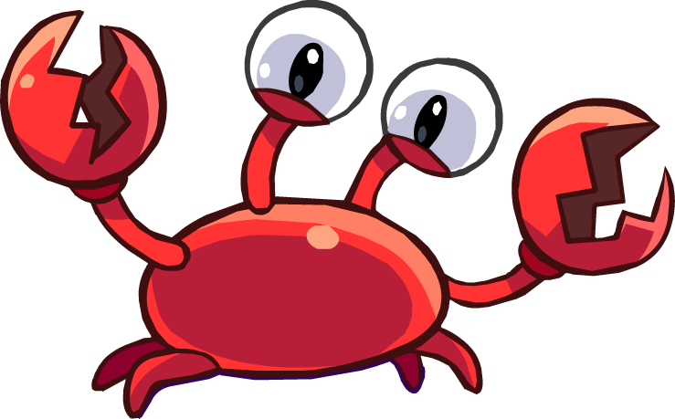

Pinguinando
Personagens

Klutzy
Klutzy é o caranguejo vilão do Club Penguin que salvou Herbert P. Bear de um afogamento quando chegou à ilha, após viajar do Polo Norte em um iceberg. Desde então, ele participou de diversas Missões Secretas como ajudante de Herbert. Klutzy é provavelmente o melhor amigo de Herbert, e o auxilia em sua missão de destruir os pinguins.